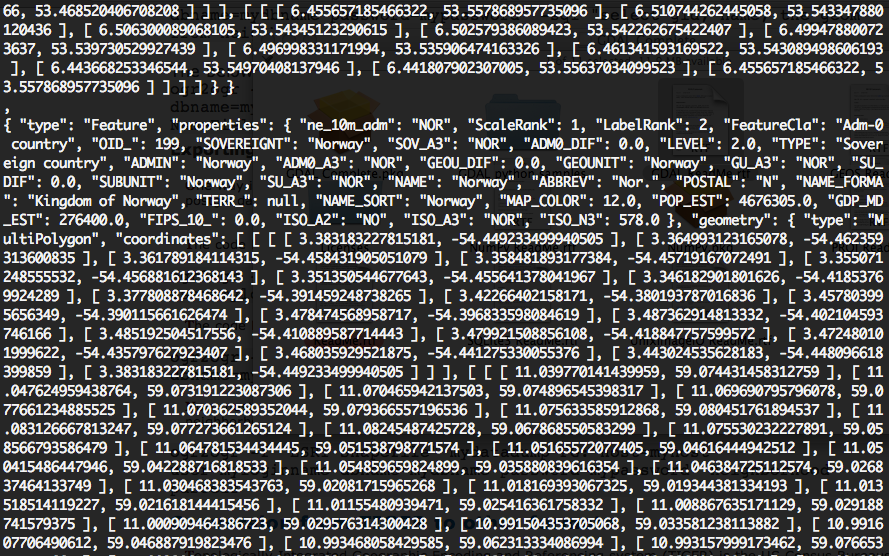

Nov. 1
- Outlined pseudocode
- Downloaded Natural Earth Data
- Highest resolution country boundaries, ~ 6MB.
- Converted country boundaries to GeoJSON using GDAL.
- Command:
ogr2ogr -f "GeoJSON" ../outFileName.json inFileName.shp inFileName

A sample of the GeoJSON file.